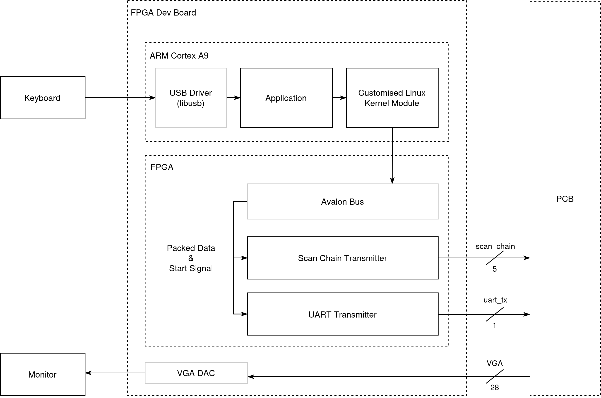
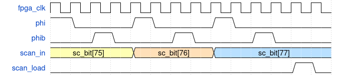
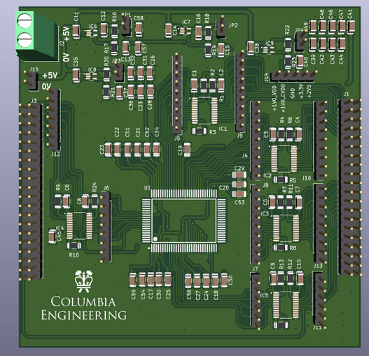
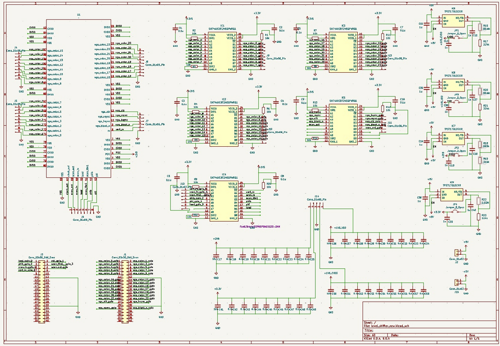
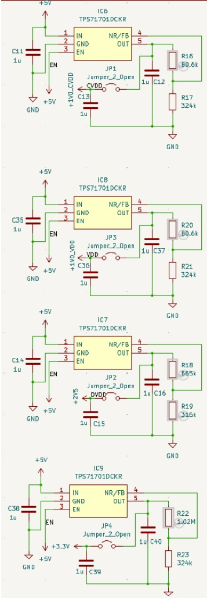
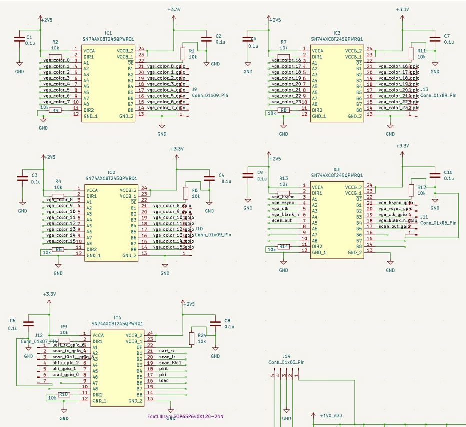
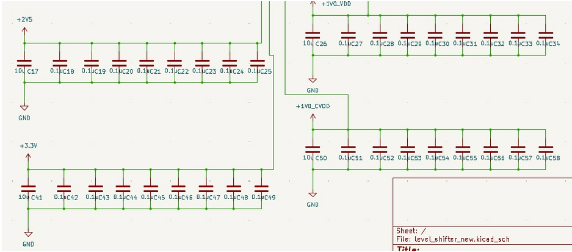
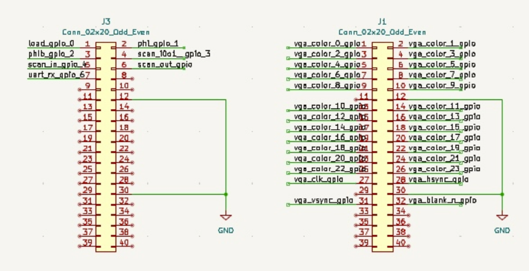
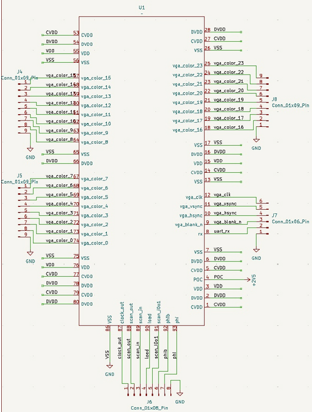
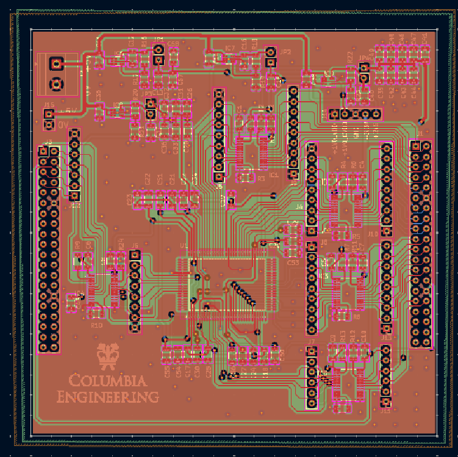

Project Overview
The project implements a compact 3D rendering pipepine that supports geomtry transformations, basic lighting effects, and triangle rasterizations. The chip is capable of generating 480p@60 fps VGA output and processing real-time UART input commands. Fabricated in TSMC 65 nm CMOS technology, the design represents a full end-to-end development effort, from defining the algorithms, architecture design, RTL implementation, testbench and driver development, synthesis and physiscal design to chip bring-up, PCV design and demo system integration.

System Architecture

[Replace with system architecture description: Explain the overall architecture, main functional blocks, and how they interact. Include block diagrams and architectural decisions.]
Rendering Engine
Input Assembler
The Input Assembler (IA) is the first stage of the graphics pipeline and is responsible for reliably receiving, framing, and packaging raw configuration and vertex-related data streamed over the UART interface into fixed-width packets for downstream processing.
It begins by interfacing with the system’s UART receiver, which outputs each validated byte together with a strobe signal; the IA remains idle until detecting a start tag that marks the beginning of a new configuration sequence, ensuring alignment and preventing corrupted data from entering the pipeline. After this start tag, the IA enters a capture phase in which every received byte is shifted into a 48-bit register, and a 6-byte counter tracks alignment so that each group of six bytes forms one complete 48-bit packet.
Every such packet is pushed into a small synchronous FIFO buffer that decouples the asynchronous UART domain from the synchronous, high-throughput graphics pipeline. The FIFO provides flow-control signals that throttle the IA when nearing capacity and allow the Vertex Shader (VS) to pull parameter packets on demand without stalling rendering.
The IA is designed to handle 42 bytes per sequence, producing seven 48-bit packets typically representing transformation parameters, viewport configuration, or other pipeline control values. The VS reads these packets during VGA blanking intervals so that new configuration data does not interfere with ongoing rasterization. The IA itself performs no interpretation of packet contents; instead, its purpose is to guarantee correct byte framing, alignment, buffering, and safe delivery of structured parameter words into the pipeline, providing a clean and timing-stable interface between the external UART input stream and the internally clocked 3D graphics processing stages.
Vertex Shader
The vertex shader is responsible for the all 3D-2D vertex transformations. VS operates in the region that VGA is blank so it won't interferece with the current triangle rasterization process. It starts from the poping FIFO inside IA to read the new configuration parameters if any, and then constructs the transformation matrix using algorithms described in the Software & Testing section. After the 3D viewpoint correction matrix and overall 2D transformation matrix are constructed and stored, it will start to read loaded vertices from memory and completes the matrix-vector multiplication. To expidate the process, we instantiated 4 of the 4-pair-input fully combinational MAC, so that each 4x4 by 4x1 multiplcation can be computed in 1 cycle. The VS also includes 3 DW_div_seq modules to normalize the correct 3D vertices with respected to the W coordinate. The pipeline starts from 3D view point correction, and while it's sent to the normalization stage, the MAC modules are used by the 2D transformation. A LUT is also constructed for providing the sin function output for angles ranges from \(0-90^{\circ}\). After all the triangles are being processed and sent to memory, it asserts a valid signal to start off BF work.
Backface Culling & Lighting Module
Once the vertex shader asserts a valid signal, the BF block starts to iterate over all triangles. For each triangle, it first reads the three vertex indices from the triangle index buffer and then fetches the corresponding 3D vertex coordinates from the vertex buffer. Using these three vertices, the module reconstructs two edge vectors and computes their cross product to obtain an unnormalized face normal. A signed dot product between this normal and one of the triangle’s vertices is then used to determine the triangle orientation. If the dot product is non-negative, the triangle is classified as a backface, and the module immediately marks it as invalid and writes a zero intensity without performing any further computation. For front-facing triangles (negative dot product), the module normalizes the face normal by using DW_sqrt_seq and DW_div_seq. The lighting stage computes a simple Lambertian diffuse intensity by taking the dot product between this normalized normal and a pre-normalized light direction vector. The intensity is clamped to non-negative values and stored as a per-triangle (flat) lighting value. In parallel, a 1-bit validity flag is written for each triangle to indicate whether it survived the backface culling. After all triangles have been processed, the BF module deasserts its busy signal and raises a valid signal to notify the following pipeline stages that culling and lighting are complete.
Rasterizer
The rasterizer operates on 2D screen-space vertices and triangle indices to determine, for each pixel, which triangle is visible at that location. It first reads the triangle index and the three corresponding vertices from the 2D vertex buffer, then computes the axis-aligned bounding box of the triangle in screen coordinates. To improve throughput, the module works on tiles of
TILE_HEIGHT = 4 pixels in the vertical direction and scans horizontally across the screen.
The rasterizer scans horizontally across the triangle’s bounding box. For each column, theTILE_HEIGHT pixels are tested in parallel. A pixel is considered inside the triangle if all edge functions are non-positive. In parallel, a 12-bit depth test is performed; only if the incoming
depth is smaller will the triangle ID and the depth buffer be updated.
Depth memory is initialized once per frame. Successful hits write the triangle index and updated depth only to the affected pixels within the tile. This tile-based, incremental rasterization design achieves real-time performance and meets the 250 MHz frequency target.
VGA Controller
Yangfan Wang
The VGA controller is responsible for generating VGA related signals based on the protocol. They include the vga clk (25 MHz), vga vsync, vga_hsync, and vga_blank, which all those are used to control the DAC for monitor synchronization. Meanwhile, it outputs the current col and row that the monitor is scanning, which controls the state of all the engine blocks. Also since the core runs on 250 MHz, there will be 10 cycles for each pixel. The VGA controller asserts a signal that indicates the beginning of a new pixel and that is where the color change can occur.
Pixel Module
The Pixel module converts triangle IDs and lighting information into the final 24-bit VGA color. For each new pixel position (x, y) provided by the VGA controller, the module checks that the coordinate is within the visible 640×480 region and then reads the corresponding packed triangle index from the tile buffer. Each entry in the tile buffer stores TILE_HEIGHT = 4 triangle IDs, so the row within the tile is selected using y[1:0].
Once the triangle index is known, the module uses it to access the per-triangle lighting value from the light-intensity memory and the base color from the color memory. A small FSM sequences the operations through four states: reading the tile buffer, reading color and light data, computing the RGB value, and periodically flushing the tile buffer when the bottom row of a tile has been scanned. During the flush phase, the entire row of tile entries is overwritten with an invalid triangle ID, so that the next frame can reuse the same on-chip memory.
The color generation path supports several configurable shading modes, selected by
color_config_i[15:14]:
- 00 – Indexed color: use the 3-bit per-channel color stored in the color memory.
- 01 – Indexed color × light: modulate the base color by the per-triangle light value.
- 10 – Solid color: use a 12-bit solid RGB value encoded in
color_config_i. - 11 – Solid color × light: modulate the solid color by the lighting value.
The intermediate results are kept in a Q9.9 fixed-point format and then truncated to 8-bitR,G,B. A one-stage register (rgb_delay) aligns the color with thenew_pixel handshake, and the output is blanked during the VGA blanking interval. The module therefore produces a continuous 24-bit RGB stream at the VGA pixel rate while the core itself runs at 250 MHz.
Memory
Memory Controller
The below table shows the usage of our SRAMs.| Number | Write | Read | |
|---|---|---|---|
| index_memory | 1 | Scan Chain | Vertex Shader |
| vertex_memory | 1 | Scan Chain | Vertex Shader |
| vertex_3d_memory | 1 | Vertex Shader | Backface |
| vertex_2d_memory | 1 | Vertex Shader | Rasterizer |
| light_intensity | 1 | Backface | Pixel Color |
| tri_valid_memory | 1 | Backface | Rasterizer |
| color_memory | 1 | Scan Chain | Pixel Color |
| depth_buffer | 1 | Rasterizer | Rasterizer |
| tile_buffer | 2 | Rasterizer | Pixel Color |
An SRAM controller is needed to switch between the two tile buffers, so that when one is read from the pixel color module for the output, the rasterizer can still work in parallel and write to another one.
SRAM Macros
We generated the SRAM macros using the generator. The number of ports, size (width & words) are determined by
the chip functionality. The mux value changes the shape of the SRAM, and is set to fit in the chip area better.
We made the two buffers be able to do partial write so that it doesn't have to modify the entire line every time.
The table shows the spec of SRAMs we used in our design.
| Name | Port | Width | Words | Mux | Mask | WP |
|---|---|---|---|---|---|---|
| index_memory | sp | 33 | 2368 | 16 | off | 8 |
| vertex_memory | sp | 48 | 1184 | 8 | off | 8 |
| vertex_3d_memory | sp | 48 | 1184 | 8 | off | 8 |
| vertex_2d_memory | sp | 29 | 1184 | 8 | off | 8 |
| light_intensity | sp | 10 | 2368 | 8 | off | 8 |
| tri_valid_memory | sp | 2 | 2368 | 16 | off | 8 |
| color_memory | sp | 9 | 2368 | 8 | off | 8 |
| tile_buffer | sp | 48 | 640 | 4 | on | 12 |
| depth_buffer | dp | 48 | 640 | 4 | on | 12 |
System Modules
Scan Chain
The scan chain provides the external access point to the on-chip memories and configuration registers. It is used to load model information before the processor starts, and to configure modules such as the Clock Generator and Test FSM. The chain consists of 78 cells, each mapped to a specific memory identifier, address pins, data pins, control signal or register bits, and uses mem_clk to shift data without timing violations safely. The memories that the scan chain can configure are Vertex Memory, Index Memory and Colour Memory. The IO signals that are provided are scan_in: serially shifts data into the scan chain (write path). scan_out: serially shifts data out of the scan chain (read path). scan_i0o1: selects direction: 0 = scan-in, 1 = scan-out. phi / phib: two non-overlapping clocks used to safely shift scan cells. load: loads all scan-cell latch values into the actual memory/register ports.
Test FSM
This module is used to clock gate the core while external transfers data to memory through scan chain and the core is at reset state. Regarding the implementation, here are two modes: 1) Idle mode where scan chain sends data to memory or core is in the reset state 2) Normal mode where scan chain sends data to the core.
Clock Generators
We use this module to generate the internal clocks required by the system by configuring two parameters, fc and div. The fc parameter is used to control the length of the inverter chain. Each time you increase fc, you’re effectively adding another pair of inverters into the clock path, which increases the clock delay and thus slows down the clock. Additionally, the div parameter divides the clock frequency by 2^"div" . The resulting clock frequency is divided by 1024 and output for oscilloscope measurement.
Design Flow
[Replace with design flow description: Detail the steps from RTL design to tape-out, including synthesis, place-and-route, verification, and signoff processes.]
Software Golden Model
The project commenced from defining the relevant algorithms and implementing a reference software model. The model serves as the foundation of the project, proving the feasbility of the overall system architecture and validating the correctness of RTL designs. The key algorithms include 3D-2D transformation, backface culling and lighting intensity computation, and rasterization with actual pixel color computation. Implemented in C++, the Golden Model consists of three major components, model file processing, computation, and output storage.The application reads three files that construct a 3D model:
- Vertex List: Defines 3D coordinates for all the vertices.
- Surface List: Describes all the surfaces using the indeces of three vertices in the counterclockwise order.
- Color List: Specifies the color value for each individual triangle. (For models that have a single color, this file will be skipped)
Algorithm Details:
- 3D-2D Transformation The following matrices are constructed first
- Backface Culling and Light Intensity Norm vector for each of the sufaces are computed first by \(n = v_1 \times v_2 \quad v_1=p_1-p_0 \quad v_2=p_2-p_0\)
- Rasterization The key process in the rasterization is to determine whether a pixel locates inside a triangle. This is done by evaluating cross products from the point with the three edges.
Object Rotation is with respect to its center.
Rotation Z = \( \cos(\text{rot}_z) \) \( -\sin(\text{rot}_z) \) \( 0 \) \( 0 \) \( \sin(\text{rot}_z) \) \( \cos(\text{rot}_z) \) \( 0 \) \( 0 \) \( 0 \) \( 0 \) \( 1 \) \( 0 \) \( 0 \) \( 0 \) \( 0 \) \( 1 \)
Rotation Y = \( \cos(\text{rot}_y) \) \( 0 \) \( \sin(\text{rot}_y) \) \( 0 \) \( 0 \) \( 1 \) \( 0 \) \( 0 \) \( -\sin(\text{rot}_z) \) \( 0 \) \( \cos(\text{rot}_z) \) \( 0 \) \( 0 \) \( 0 \) \( 0 \) \( 1 \)
Rotation X = \( 1 \) \( 0 \) \( 0 \) \( 0 \) \( 0 \) \( \cos(\text{rot}_x) \) \( -\sin(\text{rot}_x) \) \( 0 \) \( 0 \) \( \sin(\text{rot}_x) \) \( \cos(\text{rot}_x) \) \( 0 \) \( 0 \) \( 0 \) \( 0 \) \( 1 \)
Translation = \( 1 \) \( 0 \) \( 0 \) \( \text{trans}_x \) \( 0 \) \( 1 \) \( 0 \) \( \text{trans}_y \) \( 0 \) \( 0 \) \( 1 \) \( \text{trans}_z \) \( 0 \) \( 0 \) \( 0 \) \( 1 \)
Camera Rotation uses the three orthogonal vectors to defined the viewpoint diection.
Camera Rotation = \( \text{camera_right}_x \) \( \text{camera_right}_y \) \( \text{camera_right}_z \) \( 0 \) \( \text{camera_up}_x \) \( \text{camera_up}_y \) \( \text{camera_up}_z \) \( 0 \) \( -\text{camera_dir}_x \) \( -\text{camera_dir}_y \) \( -\text{camera_dir}_z \) \( 0 \) \( 0 \) \( 0 \) \( 0 \) \( 1 \)
Camera Translation = \( 1 \) \( 0 \) \( 0 \) \( -\text{camera_coord}_x \) \( 0 \) \( 1 \) \( 0 \) \( -\text{camera_coord}_y \) \( 0 \) \( 0 \) \( 1 \) \( -\text{camera_coord}_z \) \( 0 \) \( 0 \) \( 0 \) \( 1 \)
After the rotational and translational adjustmens are completed, the 3D-2D transformation is conducted by remapping the scene to a canonical view using a perspective projection matrix. Near plane and far plane is predefined to be 1 and 50. The bounding box \(\{r, l, t, b\}\) can be computed with a Field of View value and the display aspect ratio (640/480).
Perspective = \( \frac{2n}{r - l} \) \( 0 \) \( 0 \) \( 0 \) \( 0 \) \( \frac{2n}{t - b} \) \( 0 \) \( 0 \) \( 0 \) \( 0 \) \( 0 \) \( \frac{n + f}{n - f} \) \( 0 \) \( 0 \) \( -1 \) \( 0 \)
At the transformation stage, two sets of new coordinates will be computed. One is the 3D coordinate in the World Space with view point corrected to the origin and facing to \(-z\), which will be used for backface culling and light intensity. The other is the 2D coordinate in the Screen Space which will be consumed by the Rasterizer. To reduce repetitive computations, the above matrices will be multiplied first and the overall transformation matrix will be applied to each of the vertices.
Backface is checked by \((n \cdot p_0) > 0\)
Light intensity is computed by first normalizing the norm vector and then perform the dot product \(n \cdot \text{light_dir}\), where the light is a directional light source and the direction is a normalized vector.
\(w_0 = (p - p_0) \times \text{edge}_0\)
\(w_1 = (p - p_1) \times \text{edge}_1\)
\(w_2 = (p - p_2) \times \text{edge}_2\)
A pixel is considered inside the triangle if all three edge functions have the same sign.
To efficiently evalutate these functions for every pixel, we precompute the partial derivatives with respect to the x and y directions. This allows us to incrementally update the edge values across the screen using only additions. Also for each triangle, we identify its bounding box first and start from the leftmost pixel for each row.
Meanwhile, the rasterizer is responsible for depth check, ensuring that closer pixels are the ones being visible. A depth buffer is allocated for storing the current depth if a pixel is occupied.
Frontend Design
The front design process focused on RTL designs and verifications. We started from using the open source project Tiniest-GPU [1] to estimate the area and timing, and shifted to design our own versions with the new architecture that supports up to 2560 vertices and 1280 triangles. As described in the system architecture, IA, VS, RA, BF and Pixel modules are implemented from scratch and VGA controller is being modified so that it oeprates correctly with 250 MHz target clock frequency. Throughout the iterations, we have encounterd several timing issues at Post-APR stage, which enforced us to revisit the RTL. These modifications included replacing square root and division modules with DW library, adding synchronization logic for the output VGA control signals and color buses and breaking long stages so that setup timing can all be met.| Version | Features |
|---|---|
| 0.0 | Tiniest-GPU 2-Triangle Baseline |
| 1.0 (Algorithm Prototyping) | Parallel computations with 8 vertices and 12 triangles |
| 2.0 (Engine HW Design) | Multi-cycle version with pipelines with full functionalities |
| 2.1 | Integration with Scan Chain |
| 2.2 | Integration with SRAMs |
| 2.3 | Integration with Clock Generator |
| 2.4 | Integration with Test FSM |
| 3.0 (Post-APR Changes) | Replacement with DW math modules |
| 3.1 | Post-APR timing issue fixes |
Backend Design
Automatic Place & Route
The automatic place & route stage is where we spent most of our time due to the area limitation.
In the initial approach, we ran place & route for each submodule, but later found that it was wasting too much
area since all the submodules have to be in the shape of rectangle. Thus, we ran all our code as a single module
and let the APR tool do optimization on the whole design.
The first step is to place the SRAM macros in the best positions. This is a very critical step since it affects the
the routing a lot. The SRAMs should be placed according to your chip working flow, e.g., the SRAMS that are used in
the same submodule/function should be put closer. Besides, it would be better to put the SRAMs on the side instead of
in the middle, because it minimizes the routing.
Next is to decide the position for the I/O ports to the four sides. The number of I/O ports
that can be put on a side is limited to the package capacity, the offsets required between each pads,
and the number of power and ground pads needed. Since we were running out of area, we only used three
sides of the chip for I/O. We decided the position of the I/O based on the chip working flow,
which is to put inputs on the left and outputs on the top-right and bottom-right.
Here are the several improvements we did to reduce the area and solve the timing and DRC issues.
- Modify the precision of calculation
SRAMs are account of more than 80% of the area of the entire design. Thus, the first improvement is to reduce the precision of the numbers we stored in order to cut down on the size of SRAMs. - Use standard library for arithmetic operation
Instead of writing division or other opearions on your own, import the function from the standard library directly, which would give you better area and timing. - Reduce the layer for power stripes
Since our design is too complex to route, we made the bottom layer of power stripes less dense and allow some routing on that layer of metal. However, it might sometimes be problematic to mix the power and logical signals. - Add blockage or halo around SRAM cells
Routing too close to an SRAM might cause DRC errors, and it could be prevented by adding blockage or halo to stop the tool from placing components there. - Tune the Place & Route parameters
There are several effor or density configurations you can play with to reach better performance. - Give tighter condition in early design stage
Set the constraints, e.g., density, to lower in early design stage to allow more space for optimization in the later stages.
We applied the same techniques on our DUT, the test FSM, scan chain, and the clock generator.
Below is the APR results for our modules and top.
I/O and Power Pads Integration
After finishing all the submodules, we put them all together and integrated with the pads.
Our strategy on the power pads is to equally distributed to CVDD, DVDD, VDD, and GND at first.
Worried about the large number of output ports we have and the large driving force we need,
we decided to sacrifice some of the VDD pads for CVDD and DVDD to ensure enough current on the pads.
When it comes to the placement of the pads, in order to make sure all the I/O pads get enough
current, we put the power pads between sets of I/O ports. The power pads also act as the wall
for signals, which could probably enhance signal integrity.
Below is our final pad placement and the APR results after pad placement.
Sealring & Dummy
This part is relatively easy, where we put our top module inside the seal ring provided by the TA. After placement, we exported the design and ran the dummy-filling process. However, due to the limitation in the script and the filling direction, our module didn't passed the DRC density test and we had to hand-place the dummies. Our tips for placing the dummy is to ensure enough space around them.
Software & Testing Flow
For testing and demo purposes, we utilize a DE1-SOC FPGA board. The PCB and the FPGA modules are connected through the 40-pin GPIO buses.
FPGA Transmitter
As the testing flow requires a lot of data transmision from 3D obejct model files, and real-time configuration of the rendering, we built a full SoC on FPGA. One part is the ARM Cortex A9 core on the FPGA and we used it to run a Linux OS that we can communicate with the hardware through kernel modules and read USB keyboard input for our application. The other part is the FPGA fabric, which implments the transmitters.Software
The software consists of three parts- Kernel Driver: The driver includes the ioctl method that the userspace application can dispatch data to the transmitter and initiate one tranmission. It also contains the kernel module configuration files so that when the Linux system boots up, this kernel module can be loaded automatically
- USB Driver: This is obtained from [2] which is used to handle the USB communication with the keyboard.
- Main Application:
- Starts from loading the 3D model file using methods shared across the software reference model and the testbench driver.
- Completes the scan chain loading sequence using the ioctl control functions
- Initializes the USB keyboard context and listens for keypress events in the main loop. After the user issues a command, it invokes corresponding UART transmitter configuration functions
Hardware
The complete FPGA hardware is instantiated using Altera Qsys, where the FPGA transmitters are connected with the ARM core through Avalon Bus.There are two custom transmitters implemented by the team on the FPGA fabric, one for the Scan Chain, and the other for UART.
For the scan chain transmitter, there are 12 programmable register addresses that could be accessed by the kernel driver, which correspond to the 12 fileds in one scan chain request. There is also one register allocated for starting off the trasmission. This tranmitter toogles phi, phib and deserializes the packed scan chain word to signal scan_in. Overall, to complete one word transmission, it takes at least 91 cycles (12 + 78 + 1). However, as the SC_BIT_SHIFT and SC_LOAD stage need to drive signals to the GPIO and eventually to the chip through level shifters, these stages takes multiple (50) cycles for one bit change in our testing setup.

For the UART transmitter, there are 43 resigters as described in the IA module. After the write received to the address indicating a start, the UART tx will drive the signals following the protocol with 11520 bit/s baud rate which aligns with the chip rx.
All the FPGA hardware runs at 50 MHz.
FPGA VGA DAC
On the FPGA, the VGA DAC is used to translate the digital pixel values and VGA synchronization signals produced by the chip into the analog voltage levels required by standard VGA displays.Testing Methodology
Pre-silicon
Yangfan Wang
Pre-silicon verification focuses on the validation of the hardware generated outputs in RTL/Netlist simulation. The verification processes consistes of two parts: block-level testing and end-to-end testing. For each of the blocks in the engine core, the team developed correspoding testbenches and generated random data as inputs. The output is cross-checked with the C-Model result feeding the same configuration and input stimulus. For example, a series of 3D vertices will be sent to VS and we compare the transformed 2D vertices with the C-Model result. After each individual block has been verified and the top level properly constructed, we developed the end-to-end testbench.
The testbench includes two components:
- C++ Driver: For reusability, we started with developing this driver to process model file, preparing UART config data based on input control. This part of the codes are reused in the silicon driver. For testing purposes, this driver is also responsible for constructing and saving the output frame images so that we could use it to compare with C-Model generared frames.
- SystemVerilog Testbench: The testbench generates clocks for the core (for RTL sim where we don't have the clock generator), and the scan chain trasmitter logic. The testbench communicates with the the C++ driver through SystemVerilog DPI, where we imported functions so that the testbench can read new models, get commands, and accesses the memory inside the C++ driver where the 3D model and UART commands are temporarily stored.
The testbench sequences are:
- model reading with C++ initilization
- scan_chain loading (as described in the scan chain section)
- next set of UART commands generation
- run one full frame and send all the pixel color to C memory
The same set of testbench environment is deployed across RTL simulation, Post-Synthesis simulation with clock generator enabled, and Post-APR simulation with precise timing information.
Post-silicon
Yangfan Wang, Yuntian Hu
PCB Design
[Replace with PCB design description: Detail the test board architecture, power delivery, signal integrity considerations, and measurement infrastructure.]
As part of the class project, for the Demonstration, a PCB (Printed Circuit Board) had to be designed that would integrate our GPU chip as well as any devices that would communicate with it through its communication interfaces. An overview of our PCB is given below.
Schematic Design
The PCB has 5 main parts: the power supply, the decoupling capacitors, the level shifters, the GPU chip and the external devices. The overall PCB schematic are given below.
Power Supply
Our primary power source is power supply. The PCB requires three distinct voltage levels: 2.5V and 1V for the chip, 3.3V for FPGA. To meet these requirements, a variable LDO was chosen for the power supply. The output voltage is set by the values of the feedback resistors. Test points are incorporated to facilitate measurement of the LDO's output during testing. The schematic of the power supply is given below.
Level Shifters
Since our peripherals mainly support 3.3V I/O voltage, level shifters have been incorporated into the chip's I/O to convert the 2.5V/1.0V I/O voltage to 3.3V, and vice versa. The schematic of the level shifters is given below.
Decoupling Capacitor
Decoupling capacitors were added to ensure a stable and clean power supply to the chip. Each power domain of the chip is equipped with a 10 µF capacitor, while each input power pin is provided with a 1 µF capacitor. The relevant schematic is given below.
FPGA Header
This is used for the connection with the FPGA board. The relevant schematic is given below.
GPU Core
This shows some connections to the GPU core. The relevant schematic is given below.
Board Architecture
[Describe PCB layout, connector pinout, external components, and interface circuits.]
The PCB is organized around the central QFP-packaged renderer chip (U1), whose wide parallel data, address, and control buses are routed outward to multiple buffer/level-shifter stages (IC2–IC5), each implemented with SN74AXC8T245 bidirectional transceivers that translate between the renderer chip’s 1.8 V core I/O domain and the external connectors operating at 2.5 V or 3.3 V.
Along the left and bottom edges, high-density headers (J2, J3, J12, J13) expose these translated signals as clean, grouped pin banks, which each bank corresponding to one 8-bit bus segment, carrying labeled signals such as qspi_data, qspi_ctrl, or general-purpose I/O channels. Every transceiver block is paired with its own decoupling capacitors and optional domain-select jumpers that supply either 3.3 V or 2.5 V to the VCCB side depending on the required logic level.
On the right side, a set of TPS7A20 low-noise LDO regulators (IC6–IC9) generate isolated power rails (+3.7 V, +2.5 V, +1.0 V), each stabilized by input/output capacitors and fine-tuning resistors. The primary +5 V input enters through the screw terminal at the top left, feeding all regulated domains before distribution across the board. Additional capacitor arrays on the lower right provide dense high-frequency decoupling for the renderer chip’s analog and digital supply pins.
Overall, the PCB layout is cleanly partitioned into four subsystems—renderer-chip core, voltage-translation banks, regulated supply blocks, and external breakout headers—creating a structured and noise-controlled interface board where each connector pin corresponds to a level-shifted, buffered, and properly decoupled signal from the renderer chip.
Power Distribution
[Explain power supply design, voltage regulators, decoupling strategy, and current monitoring.]
Our LDO voltage regulator]
accepts input voltage from 2.5V to 6.5V; thus, we used 5V power supply for prototyping and 4 AA batteries for demo.
The voltage regulators converts the input voltage to 1V for VDD (core) and CVDD, 2.5V for DVDD, and 3.3V for level shifter to
align with the FPGA I/O voltage.
To ensure power stability, we added several decoupling capacitors (0.1u and 10u) for the three voltages. The decoupling capacitors
are used for providing the burst of current when switching, avoiding voltage drop, and filtering out noise.
To ensure power stability and signal integrity, a ground plane and a power plane are added. The power plane provides a low-impedance power path,
so the current can be delivered quickly and with minimal voltage drop. For the signals, the ground plane provides low-impedance return
path, which reduces noise and electromagnetic interference (EMI).
The entire current for our chip during the idle phase is 3 mA, and during the rendering phase is 50 mA.
Demonstration
Video Demonstration
Chip Specifications
The chip is designed using TSMC 65nm technology with 2mm x 1mm die size including the core module and I/O pads. The chip is designed and tested to be operating with 250 MHz with rendering 24-bit colored 3D objects 60 frames per second. The maximum output display supported is 480p.
| Parameter | Specification |
|---|---|
| Technology | TSMC 65nm |
| Die Size | 2mm × 1mm |
| Chip Density (Counting Std Cells and MACROs) | Top: 97.8%Core: 98.5% |
| Operating Frequency | 250 MHz |
| Supply Voltage | 1.0V Core2.5V I/O |
| Power Consumption | 50 mW typical |
| Performance Metric | 640x480 60fps |
| Package | CCQ100 |
Yun-Rong Du
Conclusions
[Replace with conclusions: Summarize achievements, lessons learned, challenges overcome, and potential future improvements.]
Key Achievements
[List major accomplishments and successful design outcomes.]
Lessons Learned
Breadboards are suitable only for low-frequency, non-precision circuits. In scenarios involving high-speed signals or higher currents, their parasitic capacitance/inductance and poor contact reliability can significantly degrade circuit performance, often causing instability or complete malfunction on the breadboard. The fact that the same design worked on the PCB in a single attempt indicates that the issues stemmed from the breadboard wiring and layout rather than from the circuit design itself. Even when a breadboard must be used, power quality should be ensured—for example, by using an LDO to reduce supply ripple and placing proper decoupling capacitors near key components—to minimize uncertainties introduced by the prototyping platform.
Future Work
[Describe potential enhancements and next-generation features.]
References
[Replace with references: List academic papers, technical manuals, and other resources cited in your project.]
- [Reference 1: Matt Pongsagon, Tiniest GPU, https://github.com/pongsagon/tt07-tiniest-gpu/tree/main, 2024]
- [Reference 2: CSEE4840 by Prof. Stephen Edwards, https://www.cs.columbia.edu/~sedwards/classes/2025/4840-spring/index.html, 2025]
- [Reference 3: Author, Title, Publication, Year]
Acknowledgments
First, we would like to express our appreciation to Apple, who sponsors
the course and gives us this precious oppurtunity.
Besides, we would like to thank Professor Mingoo Seok for guiding us on this project.
Thanks to the courses and professors in the EE department,
Advanced Logic Design by Professor Mingoo Seok,
VLSI Design by professor Ken Shepard,
Embedded System by Stephen Edwards,
which provides us with the knowledge and skills for chip design.
Thank you TAs, Da won Kim, Mosom Jana, and Chuan-Tung Lin for the assistance on the project.
We are so lucky to have you answering our questions and handling the tape-out and PCB process.
Thank you Richard Lee for the help with the lab access and procurement.
Also shout out to friends and seniors who gave us useful suggestions.
Finally, huge thanks to the 6350 classmates and teammates for sharing experience and working together.
It has been a great journey and thanks for all the people who help along the way!